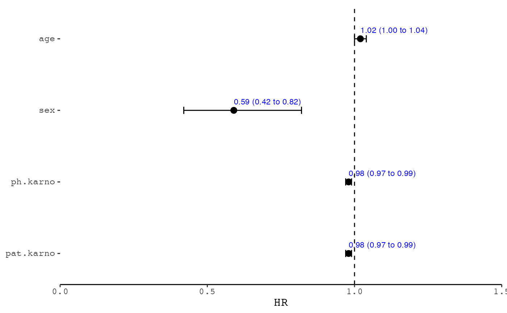
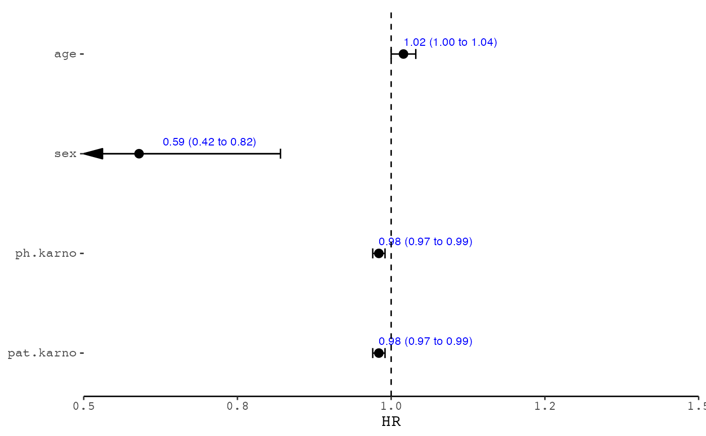

Create a forest plot for simple data
forester( data, display_cols = c("Variable", "HR", "lower_95", "upper_95"), estimate_precision = 2, null_line_at = 1, font_family = "mono", x_scale_linear = TRUE, xlim = NULL, xbreaks = NULL, point_sizes = 3, point_shape = 16, label_hjust = 0, label_vjust = -1, label_color = "blue", label_size = 3 )
| data | Data frame (required). The information to be displayed as the forest plot. |
|---|---|
| display_cols | 4 columns stand for axis text and the forest data,
default using |
| estimate_precision | Integer. The number of decimal places on the estimate (default 2). |
| null_line_at | Numeric. Default 0. Change to 1 if using relative measures such as OR, RR. |
| font_family | String. The font to use for the ggplot. Default "mono". |
| x_scale_linear | Logical. Default TRUE, change to FALSE for log scale |
| xlim | Vector. Manually specify limits for the x axis as a vector length 2, i.e. c(low, high) |
| xbreaks | Vector. X axis breaks to label. Specify limits in xlim if using this option. |
| point_sizes | Vector. Length should be equal to 1 or nrow(left_side_data). The sizes of the points in the center plot, where 3.25 is the default. |
| point_shape | Vector. Length should be equal to 1 or nrow(left_side_data). The shapes of the points in the center plot, where 16 (a filled circle) is the default. |
| label_hjust, label_vjust, label_color, label_size | hjust, vjust color and size for the label text. |
a ggplot object.
#>#>#>#>#>#>#>#>#>#>#>#>#>#>#>#>